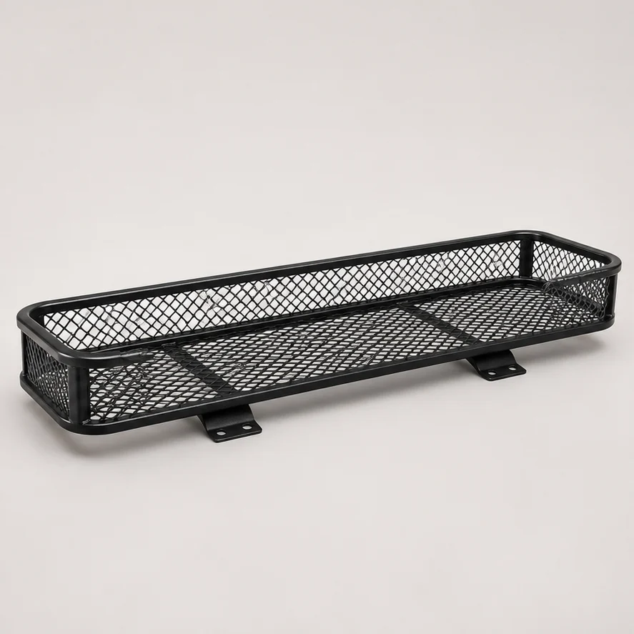

Storage & dash
Front Cargo Basket
Part No. ACC-BSKT04
$439.99 USD
A shallow steel basket keeps loose gear up front without taking up seat space.
Vehicle fitment
E-Z-GO RXV · 2008–2023
Check fit detailsRetailer sets final price, availability and shipping.
Will it fit?
| Model | Catalog years |
|---|---|
| E-Z-GO RXV | 2008–2023 |
For RXV front ends in the listed years. Check for conflicts with an existing windshield, brush guard or other front accessory.
Installation notes
- Compare the RXV model year and the front mounting points with the bracket set in the supplier listing.
- With the cart parked and keyed off, position the supplied brackets and basket as directed by the kit instructions.
- Before loading the basket, check the fasteners and clearance from the windshield and other accessories.